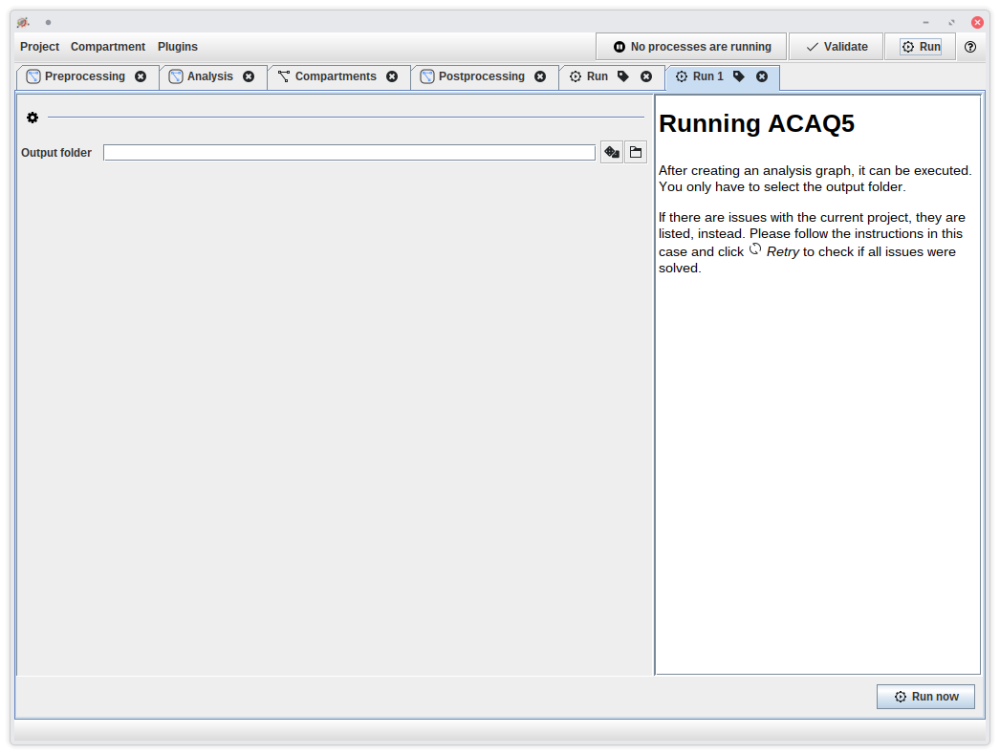
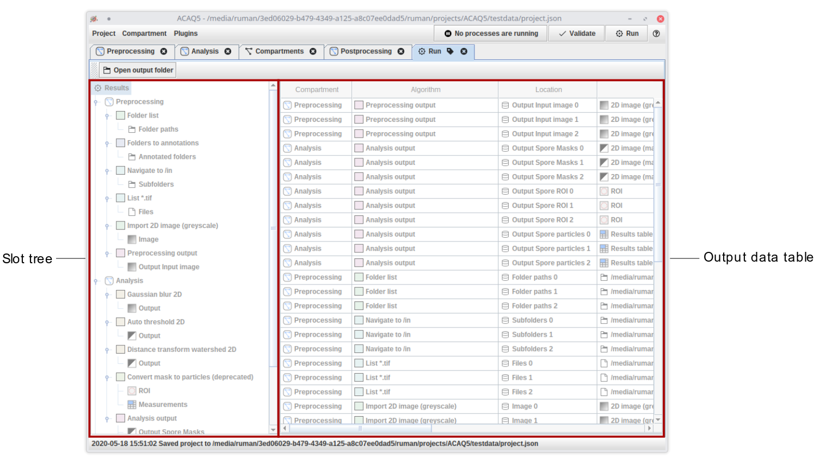

Running a pipeline
JIPipe stores its results in a user-defined output folder. After clicking
Run (located at the top right corner of a project window)
JIPipe will query the output folder from you.
You can also generate a random folder that will be located on your operating system’s temporary directory
by clicking the  button.
button.
After confirming the settings by clicking Run now, JIPipe will start processing the pipeline.

You can have as many runs as you want. Runs will not execute in parallel, but be scheduled to wait until the current run finishes.
The JIPipe output folder is automatically organized in a standardized way, so JIPipe can open a result folder. You find the “Open analysis output …” button in the “Project” menu.
Result analysis
After all results are generated, the result analysis UI will be automatically opened. It allows you to navigate through the results, and import them back into ImageJ (if supported by the generated data type).
The UI has two main components:
- The slot tree shows a hierarchy of all data slots. It is organized by compartment, then algorithm, and finally data slot. By selecting any of the entries, all data associated to the selection or any n-child is displayed.
- The output data table lists the stored data of the selected slot(s) as table (if you are unfamiliar why this is, please take a look at the explanation on how JIPipe processes data)

After selecting a set of slots in the slot tree the output data table will update to only display the data of the selected slots. The table has following columns:
- (Optional) Compartment shows in which graph compartment the generating algorithm is located
- (Optional) Algorithm shows the name of the algorithm that generated the data.
- Location is the folder name where the data is located relative to the slot directory
- Data shows a string representation of the data row. The contents vary depending on the slot data type. For example, file system data display their path at this location.
- Additional columns correspond to the data annotations that were attached by various algorithms
Importing results back into JIPipe/ImageJ/…
On selecting one or multiple rows, additional UI elements are displayed below the table. They contain various actions that can be applied to the output data, such as opening the results directory, importing the data back into ImageJ or JIPipe, or any other operation.
Double-click a row to execute the default action, which is the one most commonly used.